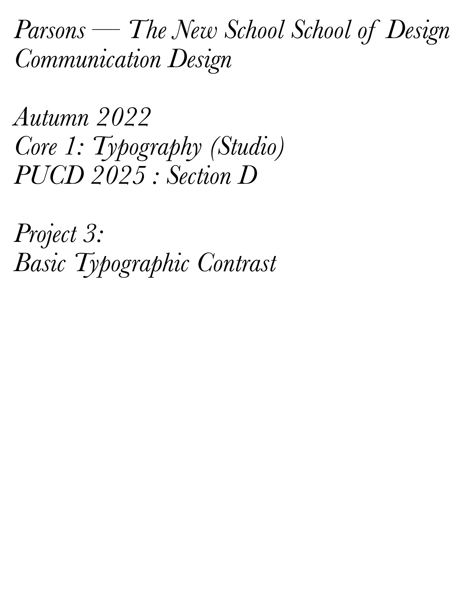
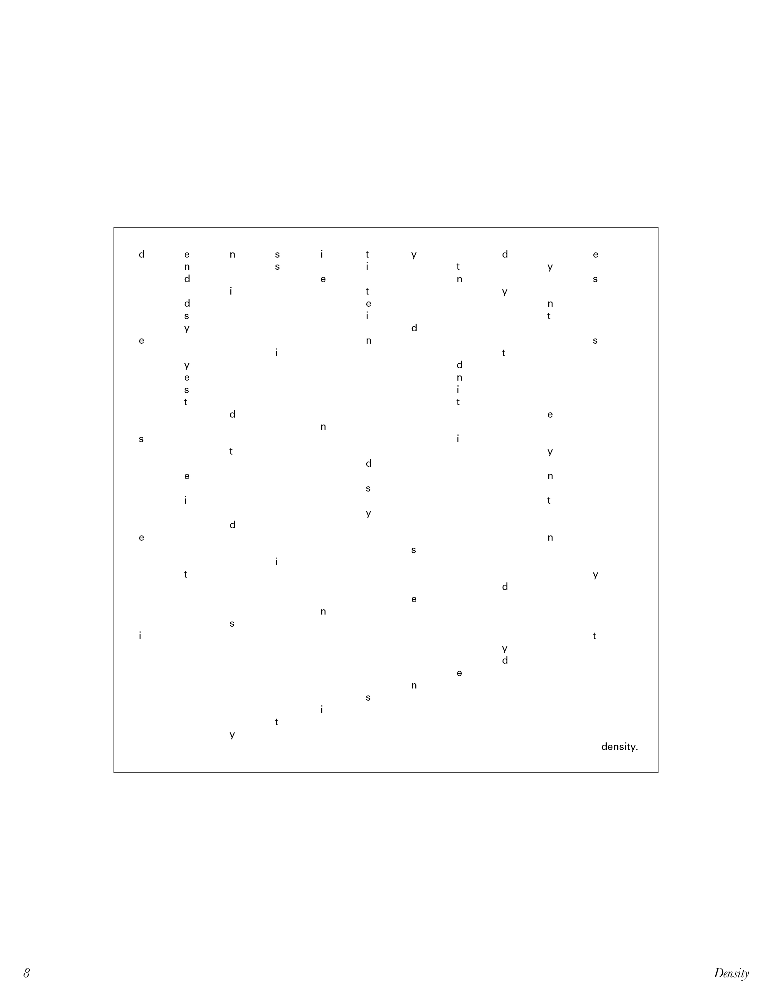

TYPOGRAPHIC CONTRAST
for CORE 1: TYPOGRAPHY with Scott Vander Zee (FALL 2022): PROJECT #3

Brief:
Explore the purely formal effects of typographic contrast, and compile your studies into a cohesive booklet.
Purpose:
* To further explore the basic elements of typography and ways to use it, in order to achieve a wide array of visually interesting results and other typographic hierarchies.
* To gain a further understanding of designing a layout, and the presentation of visuals in a multipage form.


This project functions as a practical presentation of the experimental composition studies explored.
Using only the words “Typography”, “Contrast”, “Basics in Typography”, “Typographic Contrast”, or the directly related word of the contrast being explored, the letters in these words are used as content for a series of 6 × 6 in. compositions.
Focus on the formal qualities of the letterforms: how do they relate to each other and how do they relate to the frame?
Typefaces used in this project:
- Berthold Akzidenz Grotesk
- Helvetica Neue
- Univers
- Arial
- Times New Roman
- Garamond
- Caslon
- Baskerville